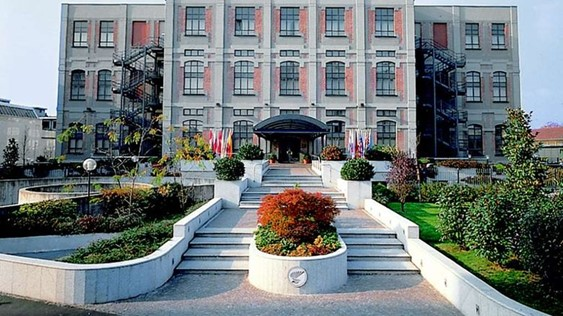

Plan putovanja Milano:
DAN 1 - DUOMO KATEDRALA
Najpoznatija katedrala u Milanu, ujedno i turistička atrakcija. Gradila se i nadograđivala godinama, započeta 1386, završena tek 1965. godine. Katedrala spolja izgleda zaista fascinantno, a pogled sa krova (terase) predstavlja poseban doživljaj. Jedna je od najvećih crkava na svetu, druga po veličini u Italiji (od nje je veća samo Bazilika svetog Petra u Rimu), i druga po veličini gotička katedrala na svetu, posle katedrale u Sevilji, Španija.
DAN 2 - ZAMAK SFORZA

Zamak Sforza nekadašnja je rezidencija milanskih vojvoda, simbol grada i jedinstveni muzej koji u svom sastavu ima čak šest različith muzeja. U različitim građevinama zamka su izložena brojna umetnička dela, a jedna od najvažnijih je i poslednja skulptura čuvenog Mikelanđela. Dvorac od crvene cigle je opasan zidinama koje formiraju kvadratni oblik. Svaki ugao krasi toranj, a najimpozantniji i najprepoznatljiviji je toranj Filarete, koji predstavlja i današnji ulaz u ovo specifično zdanje.
DAN 3 - SAN SIRO / GIUSEPPE MEAZZA
Stadion Đuzepe Meaca (ital. Stadio Giuseppe Meazza) ili San Siro (ime do 1980. godine) fudbalski je stadion u gradu Milanu u Italiji. Domaćini stadiona su dva poznata evropska kluba i velika rivala — Milan i Inter. Stadion Đuzepe Meaca ima kapacitet od 80.018 mesta. Ime je dobio 3. marta 1980. godine po proslavljenom italijanskom napadaču Đuzepeu Meaci, koji je u svojoj karijeri nastupao za tri najveća i najpopularnija italijanska kluba - Inter, Milan i Juventus. Finale UEFA Lige šampiona između Bajerna iz Minhena i Valensije održano je 23. maja 2001. na ovom stadionu, kao i finale UEFA Lige šampiona između Reala i Atletika iz Madrida 28. maja 2016. godine.
REZERVACIJA PUTOVANJA

Avio aranžman:
Autobus aranžman:
Izvršite rezervaciju